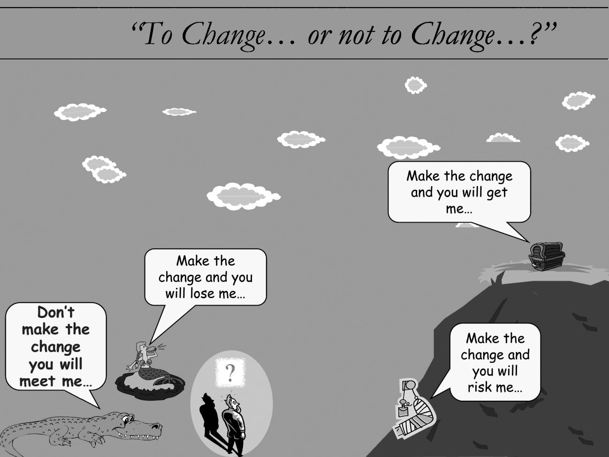

аналогия изменений (change analogy) - Картинка ниже используется для описания двух новых процессов согласия (покупки, принятия решения), основанных на более подробном перечне уровней сопротивления: плюс-плюс и минус-минус.
В процессе согласия (покупки, принятия решения) «плюс-плюс» у человека есть выбор: подняться на гору, чтобы получить большой горшок с золотом (плюс изменения), или оспорить свое пребывание там, где он / она, чтобы поддерживать отношения с окружающими. русалка (плюс не меняется).
Напротив, в процессе покупки минус-минус у человека есть выбор: быть съеденным крокодилом, если он / она не изменится (минус неизменности), ), или упасть с горы и сломать ногу. нужен костыль (минус менять).

Использование: Основная идея процесса согласия «плюс-плюс» заключается в том, что потенциальная выгода (горшок с золотом) от изменения намного, намного больше, чем потенциальная выгода от отсутствия изменений (русалка). Он основан на том факте, что большой «горшок с золотом» может быть значительным мотиватором для многих людей внести необходимые изменения, особенно если можно показать, что либо русалки на самом деле не существует, либо русалка гораздо менее важна, чем горшок с золотом, или, в некоторых случаях, вы можете взять с собой русалку.
Смотрите: процесс согласия, процесс согласия минус-минус, процесс согласия плюс-плюс.
#парадигма
Примечание АВ: Можно сравнить с Декартовыми вопросами из коучинга:
|
Что Хорошего (плюс) случится если менять (горшок с золотом) |
Что плохого (минус) случится если менять. (сломать ногу) |
|
Что Хорошего (плюс) случится если не менять (русалка) |
Что плохого (минус) случится если НЕ менять (крокодил съест) |
Синоним: change analogy